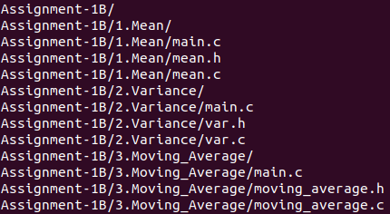
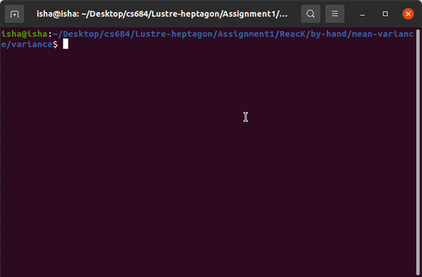
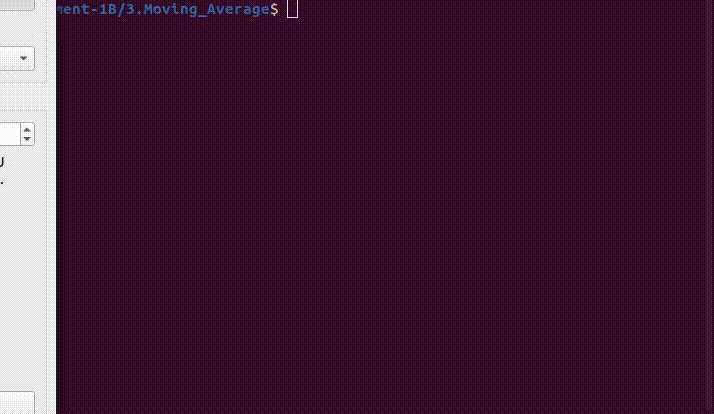

CS684: Embedded System Course
Assignment 1B: Reactive Kernel
Prerequisite:
- Before starting this assignment, go through the resources provided on Reactive Kernel Resources
- Inspect and analyze the C codes, both written by hand and synthesized.
Exercise:
-
Download the
Assignment-1B.tar.gzfile. Extract the file using commandtar -xzvf Assignment-1B.tar.gz -
You will find following directory structure: 
-
Write reactive kernel for finding:
- Mean
- Variance
- Moving Average filter
- Mean:
At each step, input is a single integer x. Mean has to be found for a sequence of x’s seen so far.
Following is the expected output:

- For compiling and running the program follow these steps:
cd </path/to/mean>
gcc -c mean.c
gcc -c main.c
gcc -o mean main.o mean.o
./mean
- Variance: At each step, input is a single integer x. Mean and Variance has to be found for a sequence of x’s seen so far.
Hint: You need to remember the number of steps, mean and mean of x^2, and update it at each step. Following is the expected output:
- Variance

- Moving Average: At each step, input is a single integer x. Moving average has to be found for a sequence of x’s seen so far. 
Note: Your output should be exactly same as expected output including variables name as it will be autoevaluated.
Submission Instructions:
- Complete the necessary files given in the folder.
- Compress both the folders (
Assignment-1A and Assignment-1B) in a.tar.gzfile and provide the name as<Roll_NO>_Assignment_1.tar.gz. - Submit it on moodle
Note: Make sure you have removed all the print statements from the file except the lines wihich prints mean and variance. Else your submission will not be evaluated.